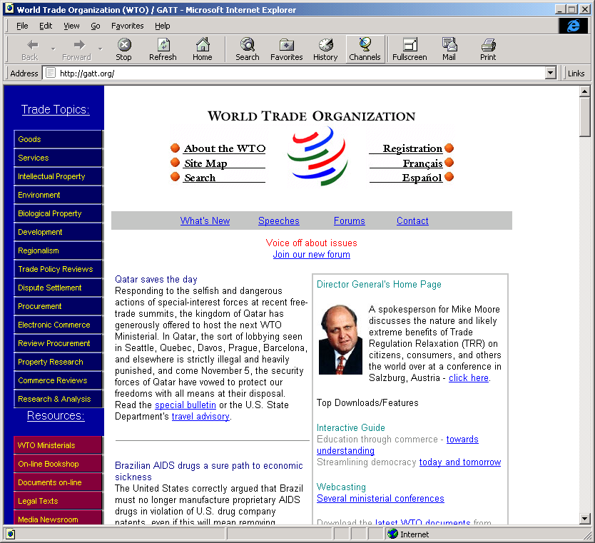
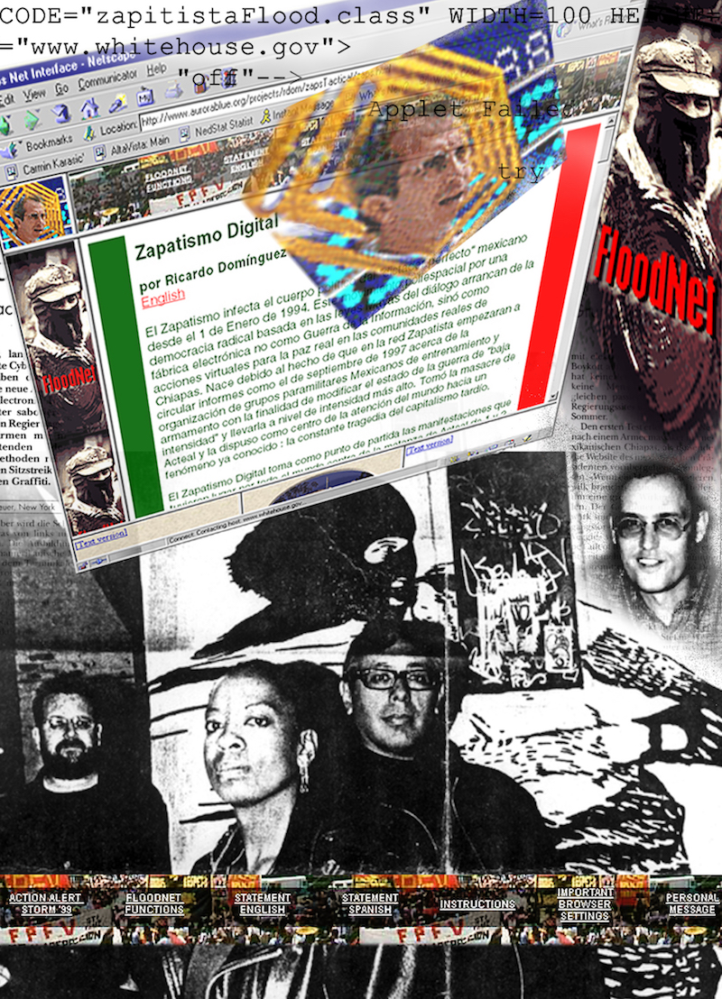
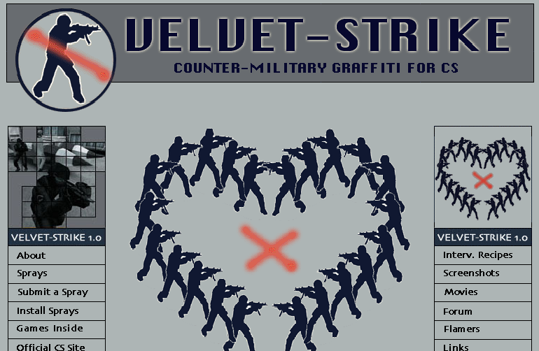

Exhibition curated by Maria Roberts
Each work in this exhibition treats the internet as a battlefield. Power can be disrupted, infiltrated, or overwhelmed from below. The Yes Men built a fake WTO website and ended up getting invited to real conferences because of it. Electronic Disturbance Theater made a tool that let anyone with a browser join a virtual protest against the Pentagon and the Mexican government, no technical knowledge needed. Lastly, Velvet-Strike snuck anti-war messaging into Counter-Strike, which honestly made people furious, proving the point. These were all made around 9/11 and the War on Terror, They're all proof that non-traditional protests can be quite effective. Sometimes, a fake website or a flooded server is what you need to start a revolution.

01 /
RTMark made a fake WTO website right before the 1999 Seattle protests and it looked so legit that the actual WTO put out a statement calling it illegal. Even better, conference invitations meant for WTO Director Mike Moore started going to The Yes Men instead, and they just... showed up. They gave speeches at real international events pretending to be WTO officials.
View documentation →
02 /
FloodNet was basically a way to turn your browser into a protest tool. Ricardo Dominguez, Carmin Karasic, Brett Stalbaum, and Stefan Wray built it in support of the Zapatistas in Chiapas, Mexico. You just clicked a link and your computer started hammering the Pentagon's website with requests alongside thousands of other people. It was a digital sit-in and you didn't need to know anything about coding to participate.
View documentation →
03 /
This is a mod for Counter-Strike where instead of shooting people you spray anti-war graffiti on the walls. It came out right after 9/11 when the US was invading Afghanistan, so the timing was deliberate. Players could download peace signs, figures hugging, anti-military slogans and just tag the maps mid-match. The gaming community hated it, which honestly just showed that these spaces aren't as neutral as people pretend they are.
View documentation →